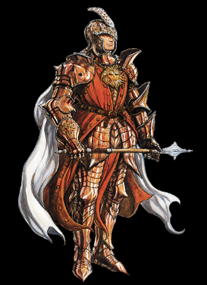

|
|
|
CLERIC |
| |
|
 |
성직자 - Healer, Diviner, and Defensive specialist
성직자들은 자신이 섬기는 신의 대변자 이며,
신의 의지를 대변하기 위해 신의 힘을 사용한다.
또한 신성마법(divine magic)의 숙련자며, 치료에 있어 뛰어나다.
그 힘으로 파티원을 죽음의 문턱에서 벗어나게 해줄 수 있으며,
고위 성직자는 죽음의 문턱을 넘은 사람 또한 다시 환생시킬 수도 있다.(이 게임에선 아쉽게도(?) '부활주문'은 나오지 않는다.)
신성한 에너지를 발휘해서 언데드류에게 강력한 힘을 행사하여
언데드를 도망치게 하거나 소멸시킬 수 있다. 만약 악한 신을
믿는 악한 성직자라면 그와 반대되게 언데드를 조정할 수도 있다.
그리고 전투훈련을 통해 무기사용도 능숙하며 신성마법을 방해하지
않는 범위에서 갑옷도 착용이 가능하다.
가치관은 대부분 자신이 섬기는 신의 가치관을 따라가지만
간혹 약간 다른 가치관을 가지기도 하며 물론 악한 성직자도 존재한다.
성직자의 모험은 신의 대의를 이루기 위한 수단으로, 자신의 신과
교단을 위해서라면 기꺼이 자신의 힘을 다해 역활을 수행한다.
때로는 고위 신관에게 명령이나 제의를 받아 선교의 목적으로
파티원을 이끌기도 하는데, 성직자들은 이런 선교에 있어서 많은 지원을 받으며
그가 속한 교단에서는 필요한 주문과 장비의 지원을 아끼지 않는다.
하지만 물론, 성직자 또한 '사람'이기에 개인적인 동기로 모험을 할 수 있다.
스탯
| |
1p |
2p |
| 영문판 이름 |
Greldon |
Miles |
| 일본판 이름 |
グレルダン(그렐던) |
マイルズ(마일즈) |
| 초기레벨 |
12 |
나이 |
31 |
| Strength |
9 |
Dexterity |
6 |
| Constitution |
10 |
Intelligence |
15 |
| Wizdom |
12 |
Charisma |
17 |
|
|
| |
게임에서의 특징
HP가 많은 편이고 방어력도 높으며 거기에 치료 주문도 있어서 생존능력이 월등합니다.
또한 스트라이킹/블레스를 통해 타 클래스를 압도하는 막강한 공격력을 보여 줄 수 있습니다.
- 교리에 따라 날이 있는 모든 종류의 무기는 사용이 불가능합니다.
(사용가능한 무기 : 메이스, 워해머, 모닝스타, 스태프 오브 스네이크, 쓰로잉 해머, 오일류)
- 전투를 보조하는 주문을 보유하고 있습니다. 특히 치료 주문은 클레릭의 가장 큰 특징 입니다.
- 턴 언데드를 통해 언데드류를 물리칠 수 있습니다(단, 점수와 아이템은 얻지 못함).
- 방어력 높은 편이라서 적이나 트랩으로 부터 입는 데미지가 비교적 적습니다.
- 쓰로잉 해머의 투척속도가 전 클래스 중 가장 빠르며 오일류 또한 파이터와 함께 가장 빠릅니다.
- 아시아 버전의 경우 셰도우 엘프의 투창 공격은 앉아있다 하더라도 맞습니다.
- 단검/화살류를 사용 못하고 방패(가드)나 슬링같은 고정 아이템이 없어서 아이템 칸이 여유가 있는 편 입니다.
그러나 단검/화살류를 줏을 수 없다는 점은 스코어 어택에 있어서 상대적으로 불리한 점 입니다.
이름과 타입
보통 대부분은 타입 I (브레슬릿)을 많이 선택합니다.
그러나 초반에 건틀릿을 얻지 못하는 경우도 있기 때문에 타입 G (건틀릿)을 선택하는 것도 쓸만 합니다.
그리고 다크워리어1을 투척무기 없이 잡을 생각이라면 타입 F (스펠 터닝 링)도 고려 해 볼만 합니다.
(이후의 셰도우 엘프의 파이어 볼, 텔'아린의 주문, 비홀더의 특수 공격에도 유효합니다.)
기본 무기와 초기 레벨/HP, 보유 아이템, 주문량
- 기본 무기 :  메이스(mace) 메이스(mace)
- 초기 레벨/HP(단위:픽셀) : 12/104
- 초기 보유 아이템 :  x 2 x 2  x 2 x 2
- 초기 주문량 : 2레벨 x 4 , 3레벨 x 4 , 4레벨 x 3
레벨과 HP, 기본 무기, 마법 습득, 주문의 양
|
|
|
* Cure Critical Wounds
- 원작의 메모라이징 대신 레벨업과 동시에 주문횟수가 회복됩니다.
- 그린 드래곤을 거쳤을 경우, 레드 드래곤을 지나칠 경우, 드워프 지하 동굴로 진행을 해서 텔 엘레론을 살려뒀을 경우
각각 1레벨씩 덜 오릅니다.
- 따라서 synn을 물리친 후의 가능한 최하 레벨은 19이며 무기레벨도 3레벨에서 멈춥니다.
- 레드 드래곤 이후의 스테이지에서 컨티뉴 했을 경우 레드 드래곤을 지나친 것으로 간주되서
레벨이 한단계 낮게 나옵니다. |
| |
*추가 정보 - 새로 컨티뉴 했을 때의 기본 보유 아이템 (가드커맨드를 제외한 나머지)
| 스테이지3 |
: 쓰로잉 해머 x 2, 버닝 오일 x 3 |
| 스테이지4(하피) |
: 쓰로잉 해머 x 3, 버닝 오일 x 3 |
| 스테이지5(오거,비홀더) |
: 쓰로잉 해머 x 3, 버닝 오일 x 4 |
| 스테이지6(만티코어 클리어 후) |
: 쓰로잉 해머 x 4, 버닝 오일 x 4 |
| 스테이지8(블랙드래곤, 키메라) |
: 쓰로잉 해머 x 4, LB 오일 x 2 |
| 스테이지10-1(게이트) |
: 쓰로잉 해머 x 5, LB 오일 x 2 |
| 스테이지10-4(베틀로얄) |
: 쓰로잉 해머 x 5, LB 오일 x 3 |
| 스테이지10-6(나그파) |
: 쓰로잉 해머 x 6, LB 오일 x 3 |
| 스테이지10-6(synn) |
: 쓰로잉 해머 x 7, LB 오일 x 4 |
|
| |
| go to Top |
| 2007 Crassus & legon. All rights reserved. |
|